Advanced reproductive technologies — embryo transfer, IVF, ovum pick-up, sexed semen and cloning — take breeding beyond ordinary artificial insemination. They let one superior cow produce many calves in a year, let farmers choose the sex of the calf, and let elite genetics travel across the world as frozen embryos. These technologies are powerful, but they are also costly and need specialist teams and laboratories.
This guide explains how each technology works in simple terms, what it costs in practice, and which technologies suit small farmers and which suit large breeding farms.
Embryo Transfer (ET) — Step by Step
In embryo transfer, embryos are collected from a superior donor cow and placed into the uterus of ordinary recipient cows, which carry the calves to term. One donor can produce 5 to 10 usable embryos in a single collection — far more than the one calf a year she could produce naturally.
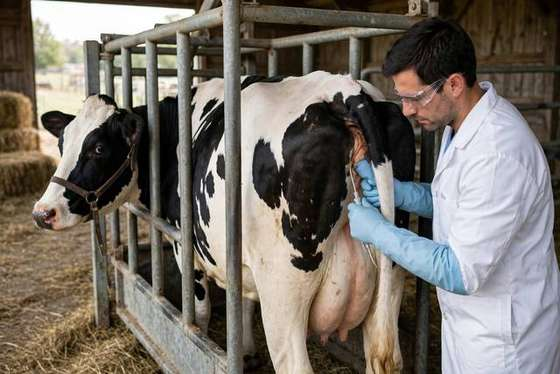
Embryo transfer — the recipient cow carries the donor's calf
1
Select the donor and recipients(Donor: a superior cow with proven milk yield and health; recipients: healthy, cycling cows in good body condition)
2
Superovulation(Hormone injections over several days make the donor release many eggs instead of one)
3
Insemination(The donor is inseminated with semen from a proven bull, usually twice during heat)
4
Flushing — embryo collection(About 7 days later the uterus is gently flushed with fluid and the embryos are collected, examined and graded under the microscope)
5
Transfer or freezing(Good embryos are transferred fresh into synchronized recipients, or frozen in liquid nitrogen for later use)
6
Pregnancy check(Recipients are checked by ultrasound about 30 days after transfer)
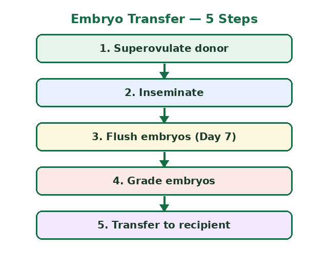
Embryo transfer in 5 steps — from donor to recipient
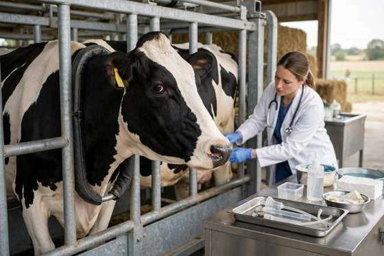
Donor cow prepared for embryo collection
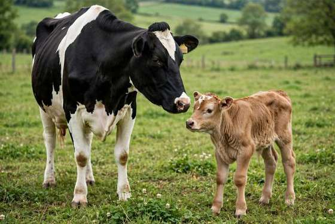
Recipient cow with her embryo-transfer calf
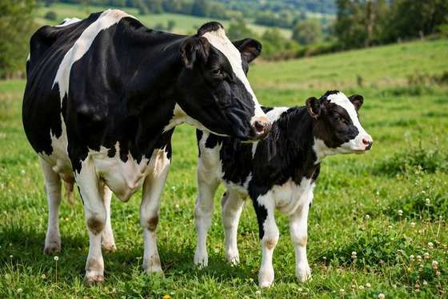
The donor cow — elite genetics, many calves
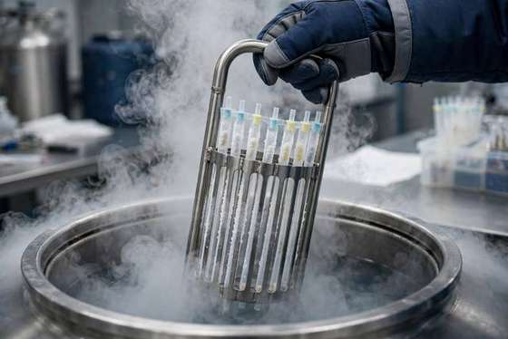
Frozen embryos — elite genetics stored for later use
In-Vitro Fertilization (IVF) — How It Works
IVF means fertilizing eggs outside the body. Eggs are collected from a donor cow, matured and fertilized in the laboratory, and grown into embryos for about 7 days before transfer. IVF can produce embryos from cows that cannot carry a pregnancy themselves — very young heifers, old cows, pregnant cows and even cows with blocked oviducts.
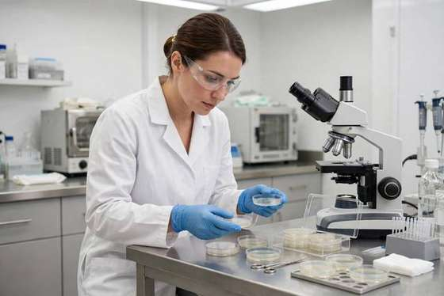
IVF embryos are grown in the laboratory before transfer
1
Egg collection (OPU)(Eggs are collected from the donor's ovaries by ultrasound-guided ovum pick-up)
2
Maturation(Eggs mature in culture medium in an incubator for about 24 hours)
3
Fertilization(Prepared semen is added to the matured eggs in the dish)
4
Embryo culture(Fertilized eggs grow into embryos over about 7 days; the best are selected)
5
Transfer or freezing(Embryos are transferred into recipients or frozen for later use)
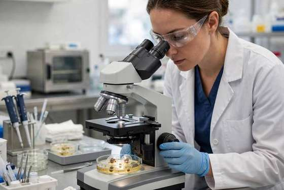
Embryos examined under the microscope
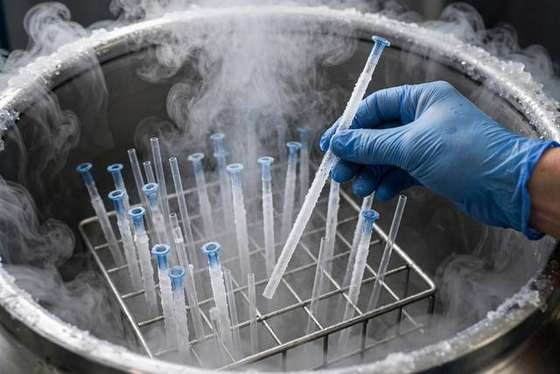
Frozen embryo straws stored in liquid nitrogen
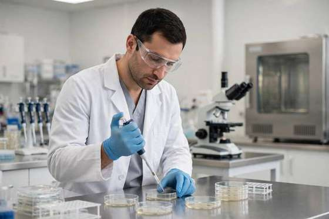
IVF laboratory — eggs fertilized and embryos grown in dishes
Ovum Pick-Up (OPU)
Ovum pick-up is the ultrasound-guided collection of eggs from the ovaries of a living donor cow. Under mild sedation, a needle guided by an ultrasound probe passes through the vaginal wall into each follicle and draws out the egg. The procedure takes about 20 to 30 minutes and can be repeated every one to two weeks on the same donor.
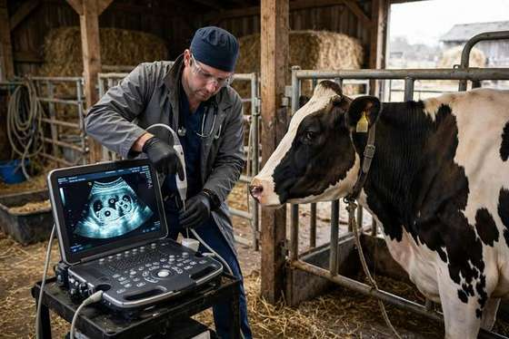
OPU — eggs collected under ultrasound guidance for IVF
OPU is the egg supply for IVF. Together, OPU and IVF can produce dozens of embryos from one superior cow in a few months — far more than embryo transfer alone, and without the hormone superovulation that ET requires.
Sex-Sorted Semen — How It Works, Accuracy and Limits
Sexed semen is semen sorted by a flow cytometer into X-bearing (female) and Y-bearing (male) sperm. Because the X chromosome carries slightly more DNA, X-sperm glow more brightly with a DNA stain and can be separated. Dairy farmers usually choose female-sorted semen so that about 90 percent of calves are heifers — the future milkers of the herd.
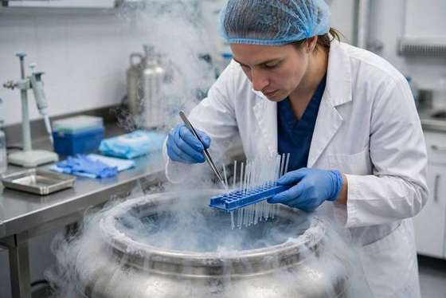
Sex-sorted semen is frozen in straws like conventional semen
Accuracy: about 90 percent for the desired sex under commercial conditions.
Lower conception: sorting damages some sperm and each straw holds fewer sperm, so conception rates run roughly 10 to 15 percent below conventional semen.
Best in heifers: young, healthy, well-managed heifers conceive best with sexed semen; it is less reliable in older or repeat-breeder cows.
Higher cost: each straw costs several times more than a conventional straw.
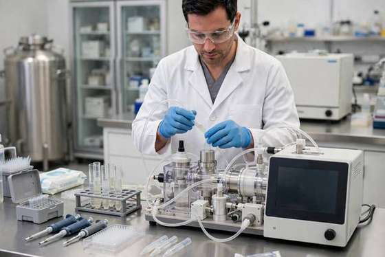
Semen sorting — a flow cytometer separates X and Y sperm
Cloning and Genomic Technologies — Current Status and Ethics
Cloning by somatic cell nuclear transfer — placing the DNA of one animal into an egg whose own DNA was removed — has produced live calves in cattle since the late 1990s. In practice it remains expensive, has low success rates, and a higher rate of pregnancy loss and newborn problems than natural breeding. It is used mainly in research and for a very small number of elite animals, not in routine farm breeding.
Genomic technologies are far more practical today: DNA testing of calves, genomic selection using DNA markers, and screening for inherited diseases are already used in many breeding programmes and are covered in our genomics guide. These tools improve selection accuracy without the cost and ethical questions of cloning.
Ethics in brief: Cloning raises animal-welfare concerns (pregnancy loss, large calves, newborn problems) and questions about genetic diversity. Many countries regulate or restrict it, and cloned animals and their products face market and consumer resistance. Farmers should follow their country's regulations and seek veterinary advice before considering cloning.
Which Technology Suits Your Farm?
The right choice depends on herd size, budget and goals. The table below is a practical guide — always discuss costs with your veterinarian or breeding service before starting.
1
Small farms (1–20 cows)(Best value: good AI with proven semen; sexed semen for heifers; buy a pregnant recipient or an ET calf instead of doing ET yourself)
2
Medium farms (20–100 cows)(Add estrus synchronization and FTAI; consider sexed semen widely; use ET for the best few cows through a service provider)
3
Large farms and breeding herds(ET, OPU–IVF and genomic selection become cost-effective at scale; elite females can produce many embryos per year)
4
Every farm(No technology replaces good feeding, health care, records and heat detection — fix the basics first, then add technology)
⚠ Important Tips:
ET, IVF and OPU must be done by trained specialist teams — never attempt them without one.
Budget for the whole programme: hormones, collections, transfers, recipients and pregnancy checks — not just the headline price.
Keep recipients healthy and well fed — a poor recipient loses a valuable embryo.
Follow your country's rules on embryo import, cloning and genetic technologies.
Frequently Asked Questions
What is embryo transfer in cattle?
Embryo transfer (ET) is a technique in which embryos are collected from a superior donor cow and placed into the uterus of recipient cows, which carry the calves to term. The donor is first superovulated with hormones so she produces many eggs instead of one, then inseminated, and the embryos are flushed from her uterus about 7 days later.
How does IVF work in cattle?
In-vitro fertilization (IVF) means fertilizing eggs outside the body. Eggs are collected from a donor cow by ovum pick-up, matured in the laboratory, fertilized with semen in a dish, and grown into embryos for about 7 days. The best embryos are then transferred into recipient cows or frozen for later use.
What is ovum pick-up (OPU)?
Ovum pick-up (OPU) is the ultrasound-guided collection of eggs from the ovaries of a living donor cow, using a needle passed through the vaginal wall. It can be repeated every one to two weeks on the same donor, and the collected eggs are used for IVF. OPU allows many embryos from one superior cow in a short time.
How accurate is sexed semen?
Commercially sex-sorted semen is about 90 percent accurate for the desired sex, usually female for dairy herds. Conception rates are lower than with conventional semen because sorting damages some sperm and each straw contains fewer sperm, so it works best in healthy, well-managed heifers.
Is cloning used in cattle breeding?
Cloning by somatic cell nuclear transfer is technically possible in cattle and has produced live calves, but it remains expensive, has low success rates and raises ethical and animal-welfare questions. It is used mainly in research and for a few elite animals, not in routine farm breeding.
Can a small farmer use embryo transfer?
Embryo transfer is costly and needs a specialist team, so it is usually beyond a small farmer on his own. A practical route is to buy a pregnant recipient cow or an ET calf from a breeding farm, or to join a cooperative programme. For most small farms, good AI with proven semen gives the best value for money.
Is IVF better than AI for my cows?
IVF produces many embryos from one superior cow, which AI cannot do, but it costs far more and needs a laboratory and specialist team. For ordinary herd breeding, AI is simpler, cheaper and more practical. IVF suits breeders who want many calves from one outstanding female.
ایمبریو ٹرانسفر اور آئی وی ایف کیا ہے؟
ایمبریو ٹرانسفر میں اچھی نسل کی گائے سے ایمبریو لے کر دوسری گائے کے رحم میں رکھا جاتا ہے جو بچے کو جنم دیتی ہے۔ آئی وی ایف میں انڈے لیبارٹری میں فرٹیلائز کر کے ایمبریو بنائے جاتے ہیں۔ یہ جدید ٹیکنالوجیز اچھی نسل کو تیزی سے بڑھانے میں مدد دیتی ہیں لیکن مہنگی ہیں اور ماہر ٹیم کی ضرورت ہوتی ہے۔
Key Takeaway
Advanced reproductive technologies multiply the calves of superior cows, let farmers choose calf sex, and move elite genetics worldwide. Embryo transfer and IVF suit breeders and large farms; sexed semen is practical for many dairy herds; cloning remains a research tool. For every farm, the basics — feeding, health, records and heat detection — must come first. Follow current local veterinary authority guidance for all reproductive technologies.